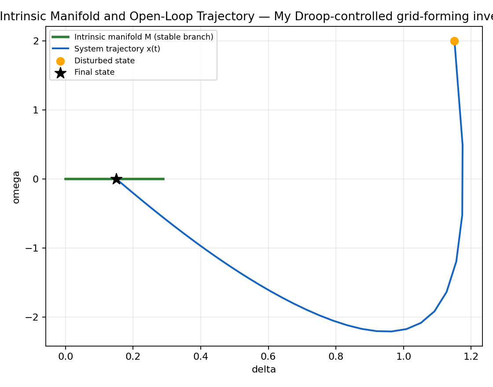
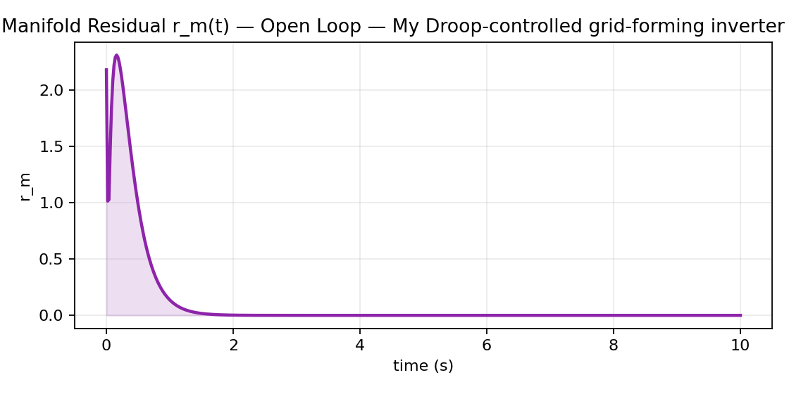
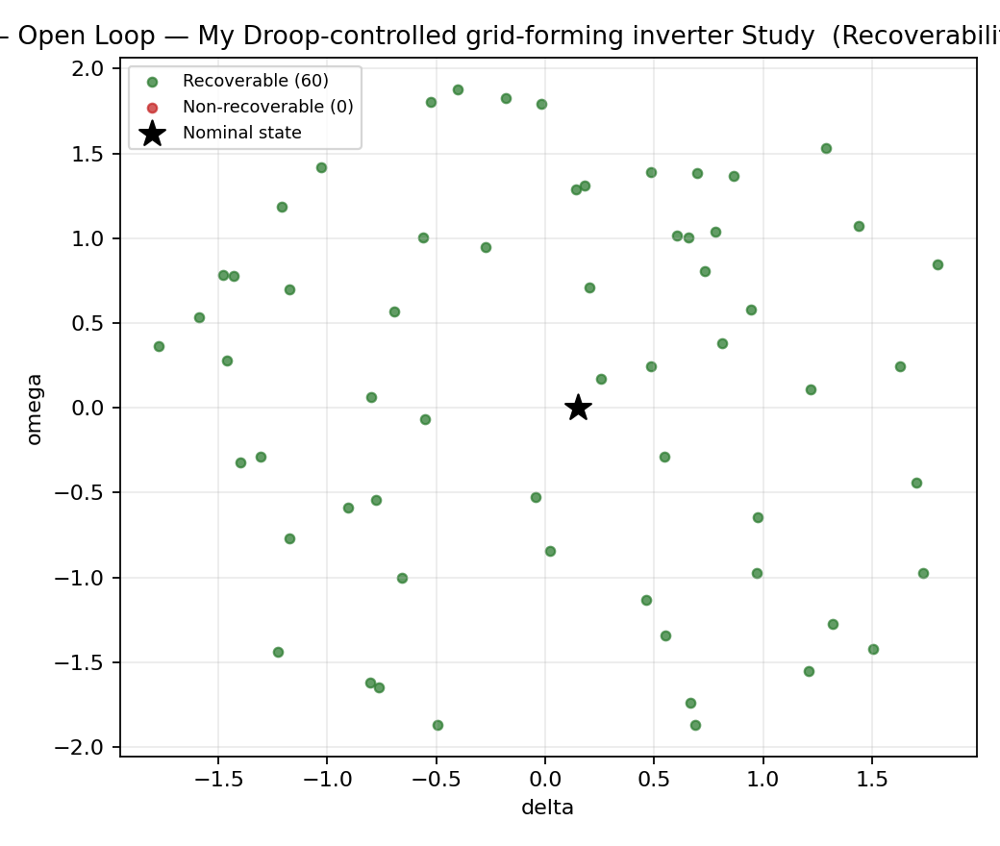
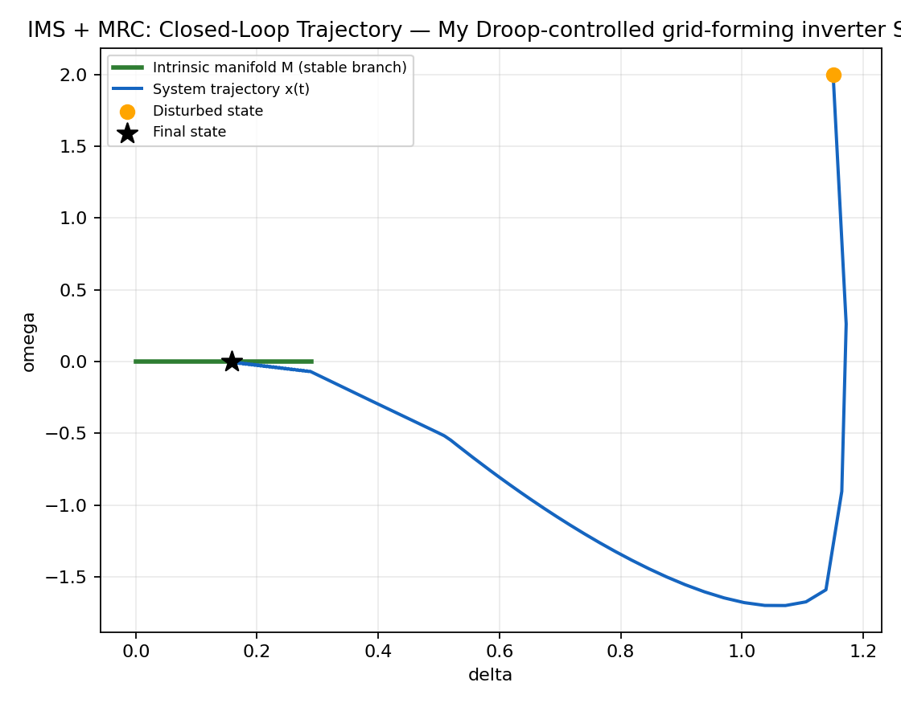
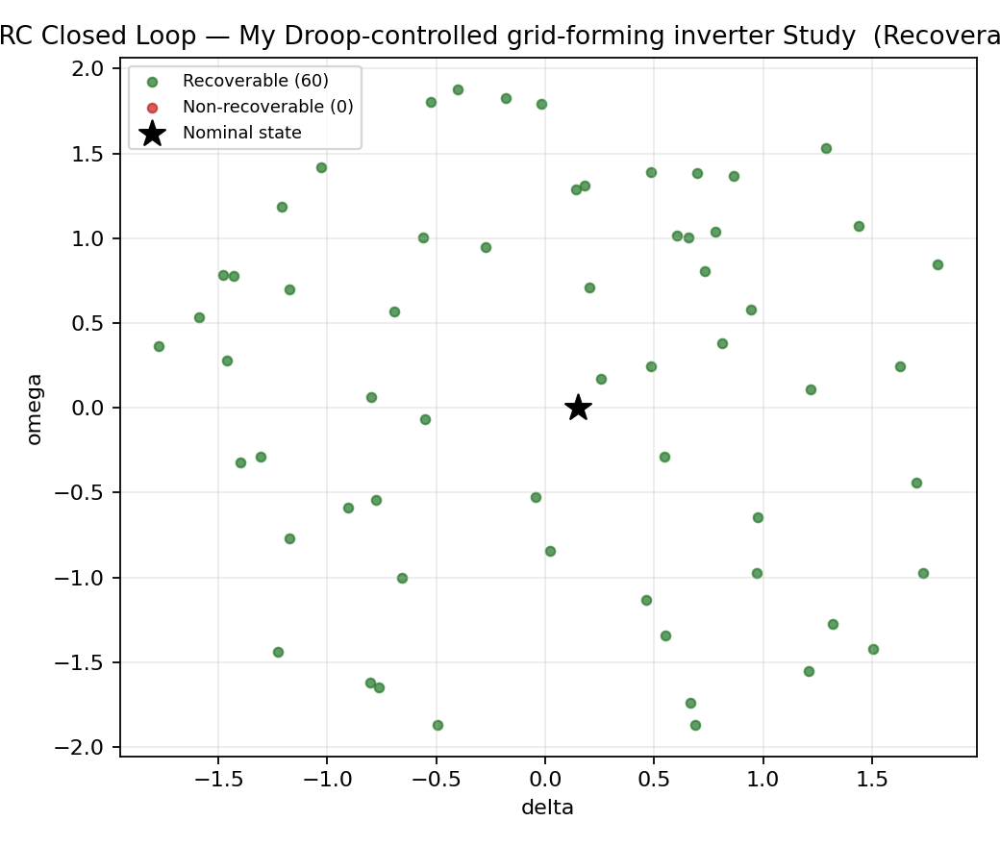
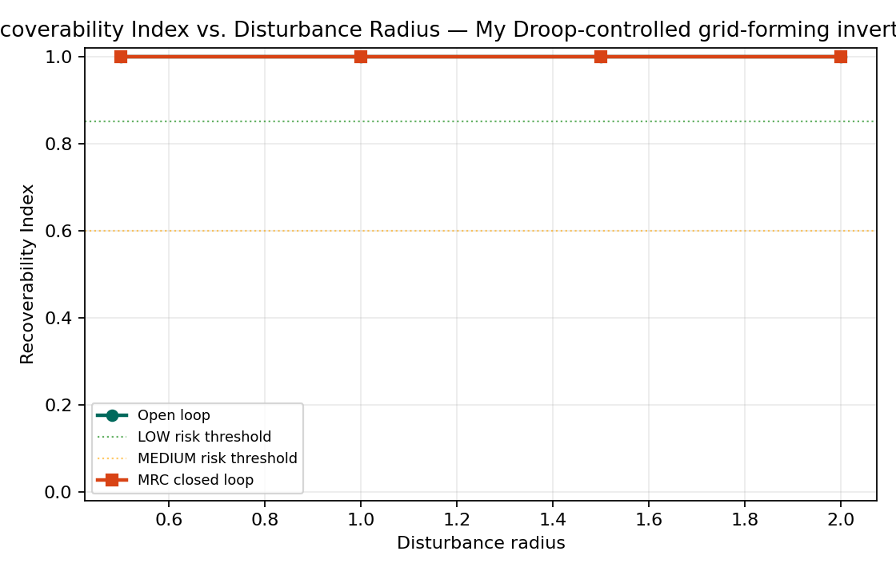

Model: GridFormingInverter ("My Droop-controlled grid-forming inverter Study")
States: delta, omega
Inputs: P_set
Sweep parameter: grid_forming_inverter_operating_param
Manifold samples: 60 (60 stable / 0 unstable)
Controller: Manifold-Reshaping Control (local LQR gain schedule over the intrinsic manifold)
Design objective: Manifold-Reshaping Control (MRC), driving trajectories back onto the intrinsic manifold following large disturbances.
The system exhibits a large recoverability region relative to the sampled disturbance envelope; nominal operation is well clear of the critical boundary.
Open-loop Recoverability Index: 1.00 vs. MRC closed-loop: 1.00 (+0.0 percentage points).





